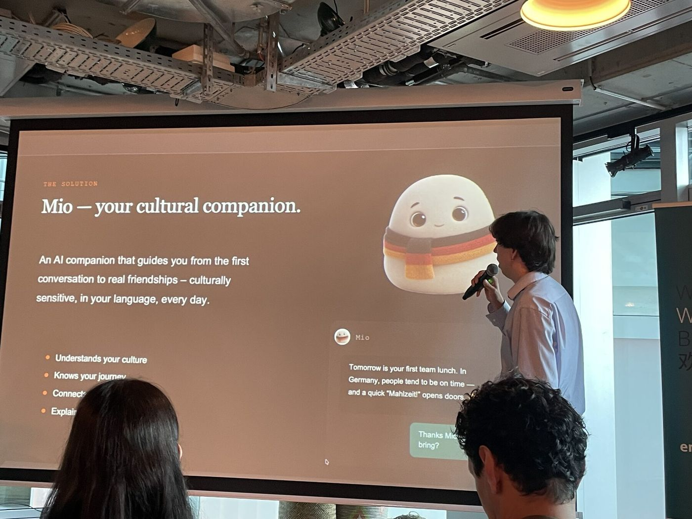
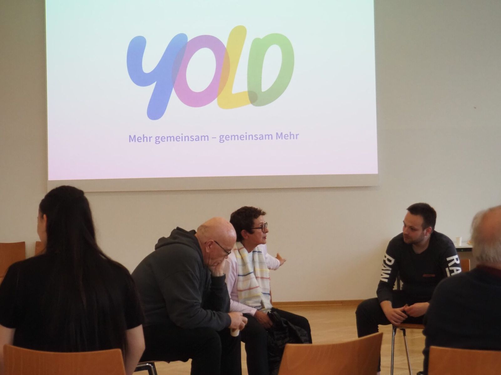
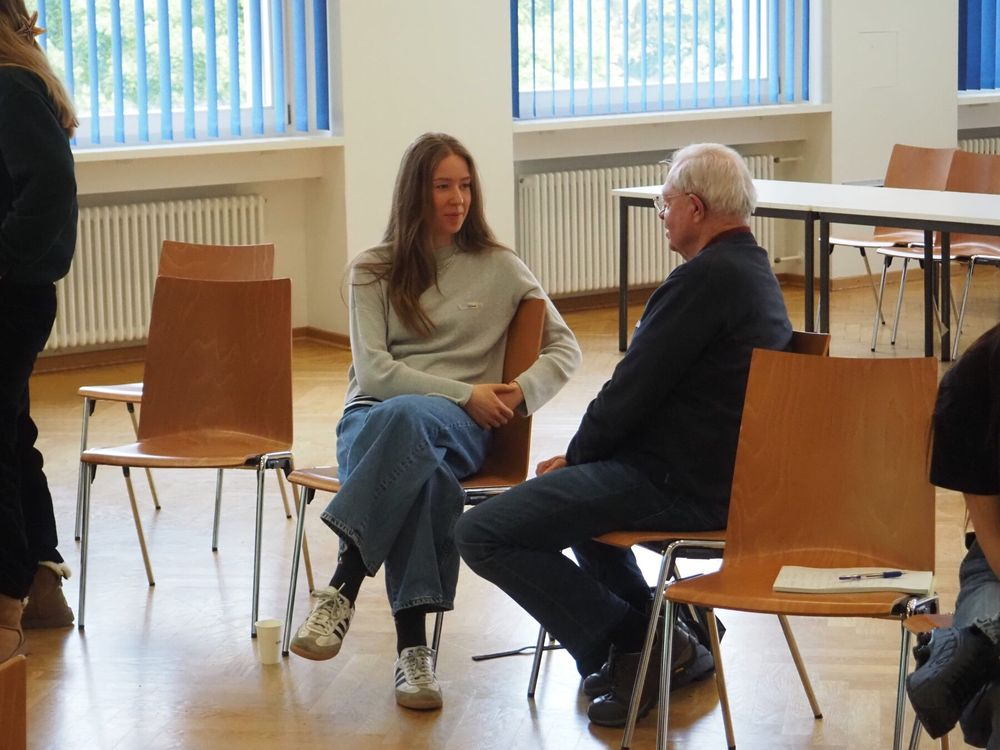
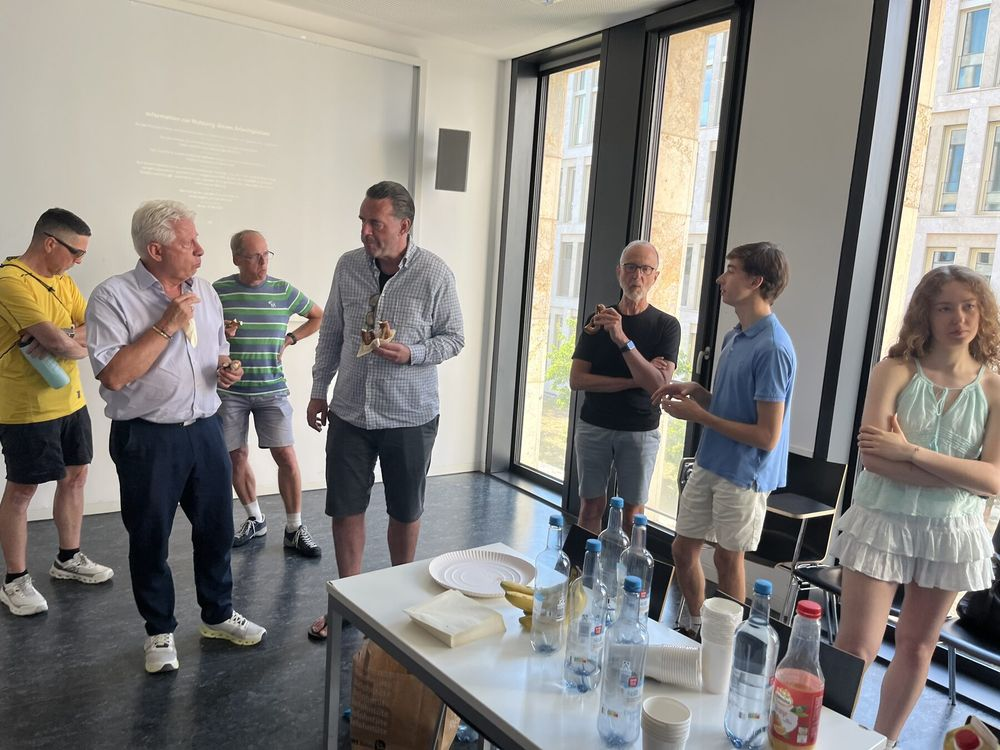

Tech & so · Technologie & Soziales · Simon & Robin Schaugg
Digitale Lösungenfür reale Probleme.
Wir verbinden Technologie, Psychologie und Produktstrategie, um digitale Lösungen für öffentliche Institutionen, Bildung und gesellschaftliche Organisationen zu entwickeln.
Civic Coding Accelerator 2026 × Deutscher Volkshochschul-Verband e. V.
Challenge C08 · vhs-Lernportal Civic Coding – Innovationsnetz KI für das Gemeinwohl
Im Civic Coding Accelerator 2026 entwickeln wir gemeinsam mit dem Deutschen Volkshochschul-Verband eine mehrsprachige KI-Lösung für das vhs-Lernportal.
Ziel ist ein digitaler Assistent, der Nutzer:innen bei Supportfragen unterstützt, Bildungsbedarfe versteht, passende Angebote findet und sprachliche Zugangshürden reduziert – ohne persönliche Beratung zu ersetzen.
Aber wenn KI sinnvoll eingesetzt wird, kann sie Services zugänglicher, persönlicher und effizienter machen.
01
AI Solutions
Wir entwickeln KI-gestützte Assistenzsysteme, Wissenslösungen und intelligente digitale Services, die reale Nutzerprobleme lösen.
Conversational AI
AI Assistants
Retrieval-Augmented Generation
Knowledge Systems
Intelligent Search
Workflow Automation
Multilingual Interfaces
02
Digital Products
Von der ersten Idee bis zum funktionierenden Prototyp entwickeln wir digitale Produkte, die verständlich, nutzbar und technisch realistisch sind.
Product Strategy
Product Discovery
Rapid Prototyping
MVP Development
UX Concepts
Digital Platforms
Technical Implementation
03
Human-Centered AI
Gute KI beginnt nicht beim Modell, sondern bei den Menschen, die sie nutzen. Wir verbinden Technologie mit Psychologie, Verhaltenswissenschaft und Nutzerperspektive.
Behavioral Design
User Research
Accessibility
Trust
Adoption
Inclusive UX
Human-in-the-loop
04
Social & Public Innovation
Wir entwickeln digitale Lösungen für Organisationen, die gesellschaftliche Infrastruktur verbessern wollen – von Bildung und Integration bis zu Wissenstransfer und Teilhabe.
Public Innovation
Education
Integration
Social Impact
Digital Participation
Community Platforms
Service Innovation
TechnologieistseltendaseigentlicheProblem.
Digitale Projekte scheitern häufig an der Schnittstelle zwischen Nutzerbedürfnissen, bestehenden Prozessen, Organisation und Technologie. Deshalb betrachten wir diese Ebenen gemeinsam.
Technik ist nur einer von vier Fäden.
Selected Work
Aus Problemen werden Produkte.
Unsere Projekte beginnen nicht mit Technologie, sondern mit einer konkreten Herausforderung. Wir verbinden Nutzerverständnis, Strategie und technische Umsetzung, um daraus Lösungen zu entwickeln, die in der Realität funktionieren können.
Civic Coding × Deutscher Volkshochschul-Verband e. V.
Problem
Digitale Bildungsangebote können nur wirken, wenn Menschen sie finden, verstehen und nutzen können. Unterschiedliche Sprachkenntnisse, komplexe Navigation und Supportbedarf schaffen insbesondere für vulnerable Zielgruppen zusätzliche Hürden.
Herausforderung
Gemeinsam mit dem Deutschen Volkshochschul-Verband arbeiten wir im Civic Coding Accelerator 2026 an einem mehrsprachigen KI-System für das vhs-Lernportal.
Lösungsrichtung
Der digitale Assistent soll Nutzer:innen verstehen, Supportanfragen beantworten, zwischen unterschiedlichen Anliegen unterscheiden und passende Bildungsangebote zugänglich machen.
Prinzip
KI soll persönliche Beratung ergänzen – nicht ersetzen.
Probieren Sie die Sprachen aus ↓
Assistent · vhs-LernportalInteraktive Konzeptskizze · kein Produktstand
Як записатися на курс німецької мови?
Я допоможу. Спочатку кілька запитань про ваш рівень німецької.Ich helfe gern. Zuerst ein paar Fragen zu Ihrem Deutschniveau.
NeuHier entwickelt digitale Unterstützung für internationale Studierende und Fachkräfte, die in Deutschland nicht nur ankommen, sondern sich langfristig zugehörig fühlen wollen.
Ein muttersprachlicher Begleiter erklärt kulturelle Codes, zeigt Stammtische, Vereine und Events – und macht sich mit jedem echten Kontakt ein Stück überflüssiger. Der KI-Begleiter Mio ist bewusst anti-parasozial konzipiert: Ziel sind echte menschliche Kontakte, nicht App-Bindung. Das Konzept stützt sich auf Akkulturations- und Einsamkeitsforschung; Wirkung soll über die Frankfurter Akkulturationsskala (FRAKK) messbar werden.
NeuHier zeigt, wie Verhaltenswissenschaft, Public-Health-Forschung und KI-Produktentwicklung in einer digitalen Intervention zusammenkommen.
Projektteam
Simon Schaugg
Brand Strategy, Business Development, Marketing & Partnerships
Robin Schaugg
Product & Technology – technische Architektur von Mio
Ziyue Zhang
Research, Public Health, Implementation Research
Einordnung
Ausgewählt
Civic Coding Accelerator 2026 – Lösungspartner für den DVV
Programm
startsocial-Stipendium 2026/27 – eine von 100 Initiativen, viermonatige Beratung durch Coaches aus der Wirtschaft
Finalist
International Founders Award 2026 – Local Final Hessen
Feature
Goethe-Universitätsmagazin EinBlick (07/2026)
Beirat
Wissenschaftlicher Beirat u. a. mit Prof. Dr. Stephan Bongard (Goethe-Universität)
Status
MVP live
Kooperation
Kooperationsvereinbarung mit der EUROPA-Versicherung
Fragen Sie Mio etwas ↓
MMioKI-Begleiter von NeuHierInteraktive Konzeptskizze
My colleague said „Wir können uns gerne duzen“. What does that mean – and what do I say?
In German workplaces „Sie“ is the default. Offering „du“ is a small sign of trust. A friendly reply: „Gerne, ich bin …“ – and from then on you use first names.
Ask Mio
Want to practise? Find a local meetup or community group near you.
Konzeptskizze: Hier würde Mio passende Treffen in Ihrer Nähe vorschlagen.
Vom Ankommen zum Dazugehören
01AnkommenOrientierung im neuen Alltag.
02VerstehenKulturelle Situationen einordnen.
03TeilnehmenAktivitäten, Events und Communities finden.
04DazugehörenEchte Kontakte, langfristig.

NeuHier-Pitch · International Founders Award, Local Final Hessen 2026
Technologie soll reale soziale Integration unterstützen – nicht menschliche Beziehungen ersetzen.



Gruppenrunden, erste Tandems, Gespräche – YOLD-Treffen in Frankfurt
Case Study 03Social Innovation · Community · Digital Platform
Menschen in unterschiedlichen Lebensphasen haben Wissen, Erfahrung und Fähigkeiten, die füreinander oft unzugänglich bleiben. YOLD verbindet sie – nicht das Alter steht im Mittelpunkt, sondern das, was Menschen voneinander lernen und miteinander erleben können. Entstanden ist die Initiative 2024 im ideellen Förderprogramm des Deutschlandstipendiums an der Goethe-Universität.
YOLD Connect ist der gemeinsame digitale Einstieg: Bundesweit geben Menschen dort ihr Wissen und ihre Erfahrung weiter, in Frankfurt entstehen dazu lokale Tandems und monatliche Community-Treffen. Keine App, die das Problem wegmoderiert, sondern Begegnung auf Augenhöhe.
Anmeldungen
170+
Tandems
60+
Begegnungen, die weiterwirken
41
Anmeldungen & Tandems live aus der YOLD-Datenbank, auf Zehner abgerundet
„Wir sind bewusst kein klassisches Mentoring, das die Karriere ankurbeln soll. Bei uns geht es um die Begegnung an sich, unabhängig davon, was wer geleistet hat.“
Tausche Sauerteig ansetzen gegen Instagram verstehen.
Zufallsgenerator mit Augenzwinkern. Echte Tandems entstehen auf yoldconnect.de.
Programme
Wissen teilen – Erfahrung aus Beruf, Hobby oder Leben weitergeben oder Orientierung finden; bundesweit, digital oder vor Ort. Gemeinschaft erleben – lokale Tandems und monatliche Community-Treffen in Frankfurt und Rhein-Main.
Mitgründer
Simon Schaugg, Steffen Luhn, Carl Brammer
Simons Rolle
Initiator, Mitgründer und Lead: Strategie, Leitung eines Teams von über 20 Personen, Marke, Partnerschaften, Pressearbeit und Förderanträge. yold.info und die Plattform YOLD Connect hat er selbst konzipiert und gebaut.
Partner
Stiftung Polytechnische Gesellschaft Frankfurt, VHS Frankfurt (Plattform 55+), Universität des 3. Lebensalters, Bürgerinstitut Frankfurt, WeAid; im Programm der Frankfurter Bürger-Universität (WS 2026/27)
Finalist
Social Impact Award Germany 2026 · eines von 15 Finalist-Teams bundesweit, Inkubationsprogramm in Berlin und Wien
Award
Goethe-Award für YOLD (07/2025), verliehen beim Jahresfest des Deutschlandstipendiums
Medien
F.A.Z., Journal Frankfurt, Frankfurter Neue Presse, Radio Frankfurt, UniReport, Social Impact Award u. a. – zum Pressespiegel
Selbst gebaut
Wir reden nicht nur über digitale Produkte.
Plattformen, Websites, ein KI-Begleiter und ein Online-Shop: Diese Produkte haben wir selbst konzipiert, gebaut und betrieben – parallel zu Studium und Beruf.
Klicken erlaubt. Alles echt.
LivePlattform · Simon
yoldconnect.de
Die digitale Plattform von YOLD: Mentor:innen-Profile, Suche und Filter, Match-Assistent, Anfragen und Mitgliederbereich – dazu eigene Admin- und Analytics-Tools.
Live-Prototyp von Mio mit Chat, Event-Radar, Screenshot-Analyse kultureller Situationen und einem „Social Tree“, der mit jedem echten Kontakt wächst. Robin verantwortet die technische Architektur.
Von 2024 bis 2026 hat Robin als Produktmanager die Plattform von Photovate weiterentwickelt: Projektmanagement, CRM und ERP für Solarunternehmen – inklusive neuer Funktionen und Produkt-Updates für Kund:innen.
Produktmanagement
B2B-SaaS
Roadmap
Kundensystem, nicht öffentlich
LiveE-Commerce · Simon
RoyalTies
Kuratierter Online-Handel mit Designer-Krawatten: eigener Shop, Verkauf über mehrere Kanäle und ein KI-gestütztes System für Bestand, Preise und Analytics. Über 140 verkaufte Krawatten, Break-even nach sechs Wochen.
Bevor wir über Tools sprechen, klären wir: (Klicken Sie ruhig mit.)
01Understand
Wir beginnen beim Problem, nicht beim Tool.
Wir verstehen
Nutzerbedürfnisse
Organisatorische Rahmenbedingungen
Bestehende Prozesse
Stakeholder & Anreize
Zugangshürden
02Define
Wir definieren den Anwendungsfall – und wo Technologie tatsächlich Mehrwert schafft.
Ergebnisse
Problem Framing
Use-Case-Definition
User Journeys
Anforderungen
Erfolgskriterien
03Prototype
Ideen werden schnell greifbar.
Wir bauen
Klickbare Konzepte
KI-Prototypen
Workflows
Interfaces
MVPs
04Test
Lösungen werden mit realen Anforderungen und Nutzerperspektiven abgeglichen.
Wir prüfen
Usability
Nützlichkeit
Vertrauen
Barrierefreiheit
Machbarkeit
05Implement
Was funktioniert, wird in reale Strukturen übersetzt.
Wir setzen um
Systemintegration
Prozessdesign
Adoption im Team
Iteration
Skalierung
Über uns
Zwei Perspektiven. Ein gemeinsamer Ansatz.
Wir kommen aus unterschiedlichen Disziplinen. Genau darin liegt unsere Stärke: Psychologie und gesellschaftliche Innovation auf der einen Seite, Produktentwicklung und Technologie auf der anderen.
STRATEGY · PSYCHOLOGY · SOCIAL INNOVATION
Simon Schaugg
Strategy & Human-Centered Innovation
Simon verbindet psychologische Forschung, gesellschaftliche Innovation und unternehmerische Umsetzung. Sein Schwerpunkt liegt darauf, komplexe Herausforderungen aus Nutzerperspektive zu verstehen und daraus tragfähige Konzepte, digitale Angebote und institutionelle Partnerschaften zu entwickeln. Ab Oktober 2026 vertieft er diese Perspektive im Master Psychologie und parallel im Bachelor Politikwissenschaft und Volkswirtschaftslehre.
Hintergrund
M.Sc. Psychologie (ab WS 2026/27) – Schwerpunkte Arbeits- & Organisationspsychologie, Sozialpsychologie und Neurowissenschaften; zusätzlich Microcredential „AI in Education“
B.A. Politikwissenschaft und Volkswirtschaftslehre (ab WS 2026/27)
B.Sc. Psychologie, Note 1,2 – beste 5 % des Fachsemesters
Initiator, Mitgründer und Lead von YOLD · Gründer von YOLD Connect
Mitgründer von NeuHier – Head of Brand Strategy, Business Development, Marketing & Partnerships
Finalist Movers of Tomorrow Award 2026 (Allianz Foundation)
Experte zum Übergang in den Ruhestand: Titelseiten-Interview in der F.A.S. (30.08.2026), BILD am Sonntag (18.10.2026)
Expertenbeitrag zur Praxisabgabe aus sozialpsychologischer Perspektive – Fortbildung der Landesärztekammer Rheinland-Pfalz, Mainz (21.10.2026)
Deutschlandstipendium (2024/25 und 2026/27) · e-fellows.net (seit 2025)
Konzipiert und baut eigene Plattformen und Websites – yoldconnect.de, yold.info, simonschaugg.de – KI-gestützt mit Claude, Lovable und Supabase
Klinisches Praktikum: eigene Beratungsgespräche und psychologische Testdiagnostik
Zertifikate u. a. Innovation & Entrepreneurship und Projektmanagement (Goethe-Universität), Design Thinking (ZEIT Akademie), Marketingstrategie (University of London)
Robin übersetzt komplexe Anforderungen in digitale Produkte und technische Systeme. Als freiberuflicher KI-Strategieberater automatisiert er Prozesse; zuvor hat er als Produktmanager bei Photovate eine SaaS-Plattform für Solarunternehmen weiterentwickelt. Bei NeuHier verantwortet er die technische Architektur von Mio.
Hintergrund
Mitgründer von NeuHier – Head of Product & Technology, verantwortlich für Mio
Leitet das NeuHier-Projektteam im Civic Coding Accelerator 2026 mit dem Deutschen Volkshochschul-Verband
Produktmanager bei Photovate GmbH (2024–2026) – SaaS für Projektmanagement in der Solarbranche
Freiberuflicher KI-Strategieberater (seit 2026) – IT-Prozessautomatisierung, u. a. mit n8n
Komplexe digitale Projekte scheitern selten nur an Technologie.
Sie scheitern daran, dass Nutzer, Prozesse, Organisation und Technik nicht zusammen gedacht werden.
Kleines Team · Direkte Zusammenarbeit · Schnelle Iteration
Zusammenarbeit
Für wen wir arbeiten
Organisationen, mit denen wir zusammenarbeiten möchten – überall dort, wo digitale Angebote Menschen erreichen sollen.
Öffentliche Institutionen
Digitalisierung, KI-Services, Zugänglichkeit und neue digitale Angebote.
Bildung
Digitale Lernangebote, intelligente Assistenzsysteme und bessere Nutzerführung.
Verbände & Stiftungen
Wissen zugänglich machen, Angebote skalieren und digitale Services entwickeln.
NGOs & Social Impact
Digitale Infrastruktur und Technologie für gesellschaftliche Wirkung.
Hochschulen & Forschung
Forschung in nutzbare digitale Produkte übersetzen.
Mission-driven Companies
Technologie, Produktstrategie und gesellschaftliche Verantwortung verbinden.
Formate
Wie wir unterstützen können
Beispiele, keine Pakete: Jedes Projekt wird individuell auf Ausgangslage, Organisation und Ziel zugeschnitten.
FormatFür wenMögliche Ergebnisse
01
AI Discovery Sprint
Für Organisationen, die wissen, dass KI relevant ist – aber noch nicht, wo sie Wert schafft.
Use Cases identifizieren
Chancen priorisieren
Realistische nächste Schritte
02
Prototype / MVP
Für eine konkrete Idee, die schnell greifbar werden soll.
Prototyp
Interface
KI-Workflow
MVP
Testkonzept
03
AI Service Design
Für Organisationen, die einen bestehenden Service rund um Nutzerbedürfnisse und KI neu gestalten wollen.
Service-Konzept
Human-in-the-loop-Konzept
Prototyp
04
Digital Product Strategy
Von der Problemdefinition bis zu Roadmap und technischem Konzept.
Problemdefinition
Roadmap
Technisches Konzept
05
Pilot Partnership
Für öffentliche Institutionen, Verbände und Organisationen, die neue Ansätze gemeinsam erproben wollen.
Gemeinsamer Pilot
Erprobung im Alltag
Entscheidungsgrundlage
Recognition · Ecosystem
Ausgewählt, unterstützt, sichtbar.
Wir unterscheiden bewusst: Partner, Programme, Auszeichnungen und akademisches Umfeld sind nicht dasselbe – und keine Kund:innen.
ArtOrganisation / ProgrammEinordnungProjekt
AcceleratorCivic Coding Accelerator 2026Ausgewählt als KI-Lösungspartner im Innovationsnetz KI für das Gemeinwohl.NeuHier-Team
PartnerDeutscher Volkshochschul-Verband e. V.Aktueller Kooperationspartner im Rahmen von Civic Coding (Challenge C08).Civic Coding
FinalistMovers of Tomorrow 2026Persönlicher Award der Allianz Foundation – Finalist als Initiator von YOLD.Simon
FinalistSocial Impact Award Germany 2026Eines von 15 Finalist-Teams bundesweit, dreimonatiges Inkubationsprogramm in Berlin und Wien.YOLD
Local FinalInternational Founders Award 2026Finalist im Local Final Hessen.NeuHier
UniversitätGoethe-Universität FrankfurtAkademisches Umfeld; Feature im Universitätsmagazin EinBlick, Berichte im UniReport.NeuHier · YOLD
AwardGoethe-AwardVerliehen beim Jahresfest des Deutschlandstipendiums (07/2025).YOLD
ÖkosystemGoethe Startup SchoolGründungsintensivkurs und Entrepreneurship-Ausbildung.Simon
Programmstartsocial-Stipendium 2026/27Eine von 100 Initiativen bundesweit; viermonatige Beratung durch Coaches aus der Wirtschaft.NeuHier
VortragLandesärztekammer Rheinland-PfalzExpertenbeitrag „Was bleibt, wenn die Praxis geht?“ bei einer Fortbildung zur Praxisabgabe, Mainz (10/2026).Simon
Presse & Medien
Worüber berichtet wird.
Interviews, Expertenbeiträge, Berichte und Podcasts – zu Einsamkeit, Generationendialog, dem Ankommen in Deutschland und dem Übergang in den Ruhestand.
Im Fokus · F.A.S. · 30.08.2026 · Titelseite Rhein-Main
„Den Leistungsdruck nicht mit in den Ruhestand nehmen.“
„Die Gefahr ist, dass mit dem Übergang in den Ruhestand ein großer Identitäts- und Rollenbruch stattfindet, auch sozial.“
Aufmacher-Interview der Frankfurter Allgemeinen Sonntagszeitung mit Simon Schaugg als psychologischem Experten.
„Entscheidend ist weniger, wie viel jemand gearbeitet hat, sondern wie viel seines bisherigen Alltags, seiner sozialen Einbindung und seines Selbstbildes an dieser Arbeit hing.“
Simon Schaugg als Experte zum Leben nach dem Beruf.
Sie arbeiten an einem digitalen Angebot, einem KI-Projekt oder einer gesellschaftlichen Herausforderung? Wir freuen uns über Pilotprojekte, Kooperationen und gemeinsame Produktentwicklung.